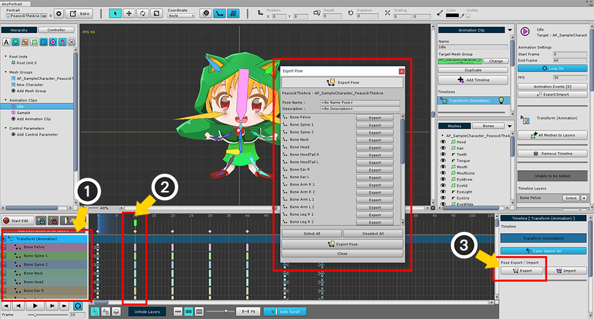
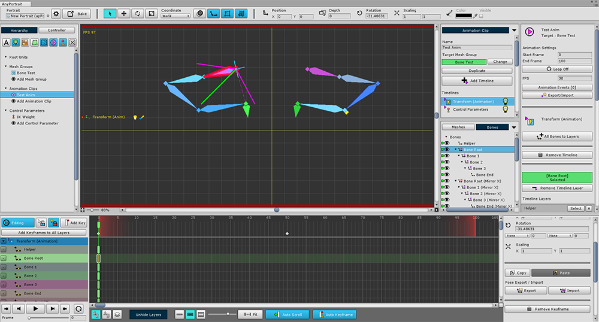

AnyPortrait > Manual > Copy / Paste pose of bones
Copy / Paste pose of bones
1.0.4
In many cases, you need to create a bone pose repeatedly several times while creating a bone animation.
You can create various motion animations from the same "stand" and take the same action every time.
This page covers how to copy the posture of a bone in one frame and paste it into another frame.
Copy Pose

(1) select the timeline containing bones,
(2) move the time slider to where you want to copy,
and (3) click the Export button in the property UI.

(1) Enter the pose name and description.
(2) Select the bones you want to copy. You can select it all at once by pressing the Select All / Deselect All button.
(3) Press Export Pose button to save as file.
Files are created automatically, so you can copy them easily.
Paste Pose

In the same way, with the timeline with the bone selected, press the Import button.

The pose you just saved will appear in the list.
(1) Select the pose you want to paste,
(2) After confirming the name, description, and bones of the stored pose,
(3) Click the Import Pose button to paste.

The pose of the saved bones is optionally pasted.
(If you do not have a keyframe, it will automatically generate keyframes.)
Pose Import Dialog

Unlike dialogs that store a pose, the dialogs you get are a bit more complicated.
1. Save path
The save path set in the editor.
2. Filter
Filtered as "Same Mesh Group", "Same Portrait", or "All Poses"
3. Pose item
Saved pose. Select by pressing Select button.
4. Selected pose information
The pose name, description, and saved bone names are displayed.
5. Remove Pose
6. Import Pose
Paste the pose while creating the animation keyframe.
Paste the pose into the mirror bones

If you have a mirror bone, you can copy the pose symmetrically.
Please refer to related page about mirror copy of Bone.

The process of copying poses is the same.
(1) Press the Export button and (2) select the bones to be copied to save the pose.

(1) Click the Import button to open the Import Pose dialog box.
(2) Select the pose you saved,
(3) Press the "Import Symmetrically" button to copy the pose to the mirror Bones.
If there is no mirror bone, the pose is copied to the selected bone.

You can see that the pose has been copied to the mirrored bones.